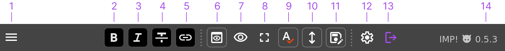

Getting Started With IMP!
How it works
When you load IMP! Locally, it opens up an editor, where you can enter or import your text, setup SEO tags and custom CSS. When the very same page is served over http, user gets a light, static HTML. Page does not require Java Script to be viewed, it's just plain HTML.

System requirements
Descent browser, Firefox or Chrome preferred (tested). If you've updated your browser within last 4 years, it should be fine.
Step by step guide
- Download and unpack. There are 4 files:
index.html,style.css,imp.jsandhelpers.js. The latter is not needed for basic functionality. - Open the
index.htmlin your browser (Firefox or Chrome is recommended) - Edit it, import or enter your text, preview it. Click the big "Export HTML" ("Save" in newer version) button and save file to the same directory. If you didn't change file name, overwrite old file.
- Upload files to server, you may skip
imp.js, as it's not required for viewing file. - That's it.
UI overview
All basic functions are located in the top toolbar. Here the explanations for each button:

- Drop-down menu with additional functions, such as:
- Import and export markdown.
- Duplicate page.
- Settings editor
- Format selected text as bold.
- ...italic.
- ...
strike-through. - Make link from selected text.
- Toggle half-screen preview.
- Toggle full-width preview.
- Go full screen (result may depend on browser).
- Toggle spell check.
- Toggle scroll synchronization between editor and preview.
- Save file. Highlights when file has unsaved changes.
- Open settings editor.
- Go view mode (exit editor).
- IMP! version used.
Settings editor
Most options here are pretty self-explanatory, like page icon, title and other SEO stuff. From here you also can embed/edit data, enable helpers API and change editor and main css file locations.
Known problems
- If you use NoScript extension, you'd need to disable it for IMP! page (not just set to TRUSTED mode, but disable all restrictions completely)